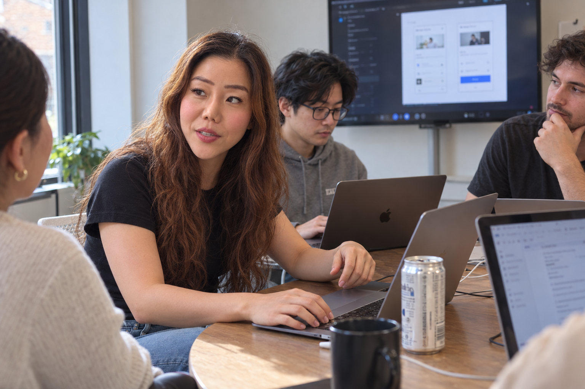

Translation-first localization
The UI copy is now in English, but onboarding still assumes a Korean user, so first-time users don’t grasp the product’s value.
Can a first-time user understand the value and get started?
Product design across markets.
We understand how your users and their work environments differ, then design the product experience and execution priorities with your team.
Healthcare · Enterprise · Complex operational workflows
Why Us
Translation alone won’t get your product used in a new market. When the market and users change, how people work, how they make sense of a product, and how they judge trust all shift too—and teams that built for the Korean market often find these differences hard to see from the inside.
The UI copy is now in English, but onboarding still assumes a Korean user, so first-time users don’t grasp the product’s value.
Can a first-time user understand the value and get started?
Core workflows don’t fit how local teams divide roles and handle approvals, so the product isn’t used in day-to-day work.
Do core workflows match how target users actually work?
Menu structure and button labels don’t make the next step clear.
Do the screen structure and wording clearly guide the next action?
There seems to be a lot to fix, but the team can’t decide what to tackle first before launch.
Which UX problems should be fixed first before launch?
The examples above illustrate common types of trial and error; they are not specific client cases.
Design doesn’t end with screens. We explain design intent and priorities in language the whole team can use, and decide together what happens next.
Each entry separates the company’s background from Rachel’s role.
2025–2026
Healthcare SaaS
2024
Enterprise monitoring
2019
Product localization

Services
We work at the scope your team needs. From a short review to product design and development collaboration, you can start where you are today.
Example deliverable The screens below show what deliverables can look like. They are examples, not actual project results.
We design agreed problems as user flows and screens, then carry them through prototyping and development collaboration. Documenting design intent, requirements, and edge cases together reduces differences in interpretation during implementation.
Default
Input border at 3:1 or more against the background
Error
Explain the cause in words, not just color
Disabled
Explain why it can’t be pressed
Selected Work
Three projects Rachel Cho delivered in previous roles, before starting Second Context. Client names are not disclosed.
Recreated for illustration · Sample data
Designed complex eligibility conditions, scheduling rules, and exceptions so users could understand them and act right away.
Recreated for illustration
Key design decision Instead of exposing internal rules and codes, a calendar of bookable dates and clear status indicators let users decide their next step.
5.8 to 8.2
User rating Confidence in planning schedules, measured in the pilot
180 sec to 60 sec
Work outcome Task time after several improvements were applied together
35% less
Work outcome Manual validation in the AI-assisted scheduling workflow
3,000+
Adoption scope Clinicians using the AI scheduling recommendation experience
Connected severity, scope of impact, and investigation priority across a large volume of information.
Recreated for illustration
Key design decision Restructured information scattered across 8 dashboards around severity and downstream impact, so teams could first decide what to investigate.
30 min to 3 min
Work outcome Incident investigation time reported in the project
80% faster
Work outcome Incident triage time after redesigning decision-support workflows and signal display
40% faster
Work outcome Ticket processing time in developers’ internal tools
Adapted the product experience to the language and its context of use.
Recreated for illustration
Key design decision Went beyond translated copy, adapting name, date, and time formats as well as typography and spacing to the Korean context of use.
6 weeks
Project length Localization period in 2019, with a production agency and the client’s Korea and U.S. teams
Figures are as measured and reported in each project; measurement methods differ by project.
Let’s look at your product and where it stands today.
Founder
I’m Rachel Cho, the product and UX consultant who leads Second Context. I led product design as a founding designer at a U.S. healthcare startup from Y Combinator that raised $14.2 million. Drawing on my experience with enterprise systems and product localization for global companies, I diagnose complex problems and connect them to clear priorities and real, working design.
I funded my own education and built my career as an immigrant, navigating a new language and culture. Traveling as a digital nomad taught me to understand different backgrounds and perspectives—and it shapes how I look at the context a product is used in, and the people within it.
Today, I work through challenges with product teams and founders, and help immigrant communities and junior designers make a fresh start. Through mentoring on ADPList and teaching UX and AI product design at Flexwork Pro, I share what I’ve learned and help people find a practical next step, even when the way forward feels unclear.
Contact
Tell us about your product, your target market, and the challenges you’re working through. We’ll explore the right scope of collaboration together.